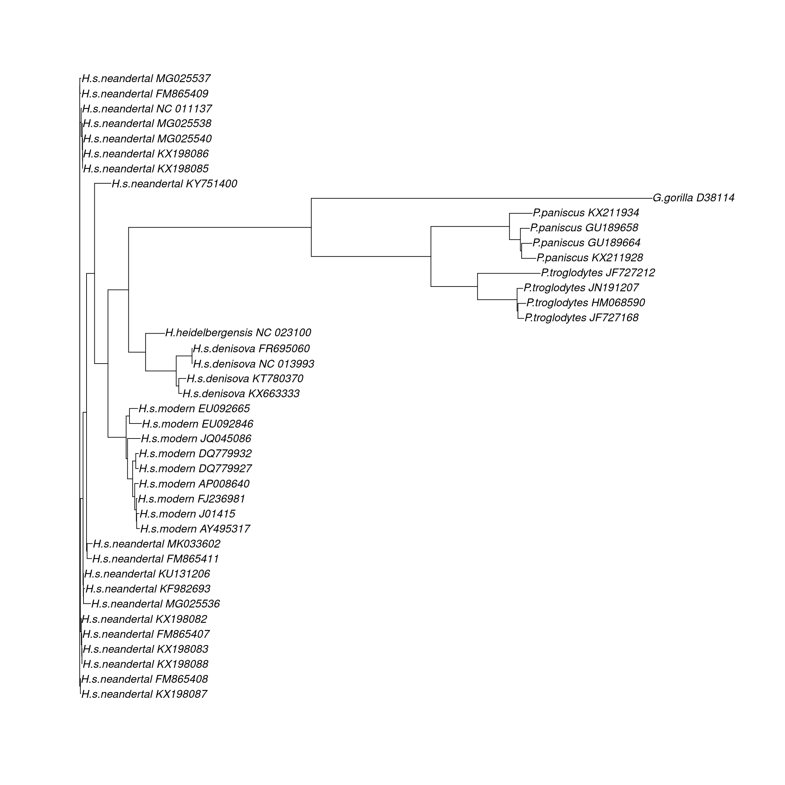
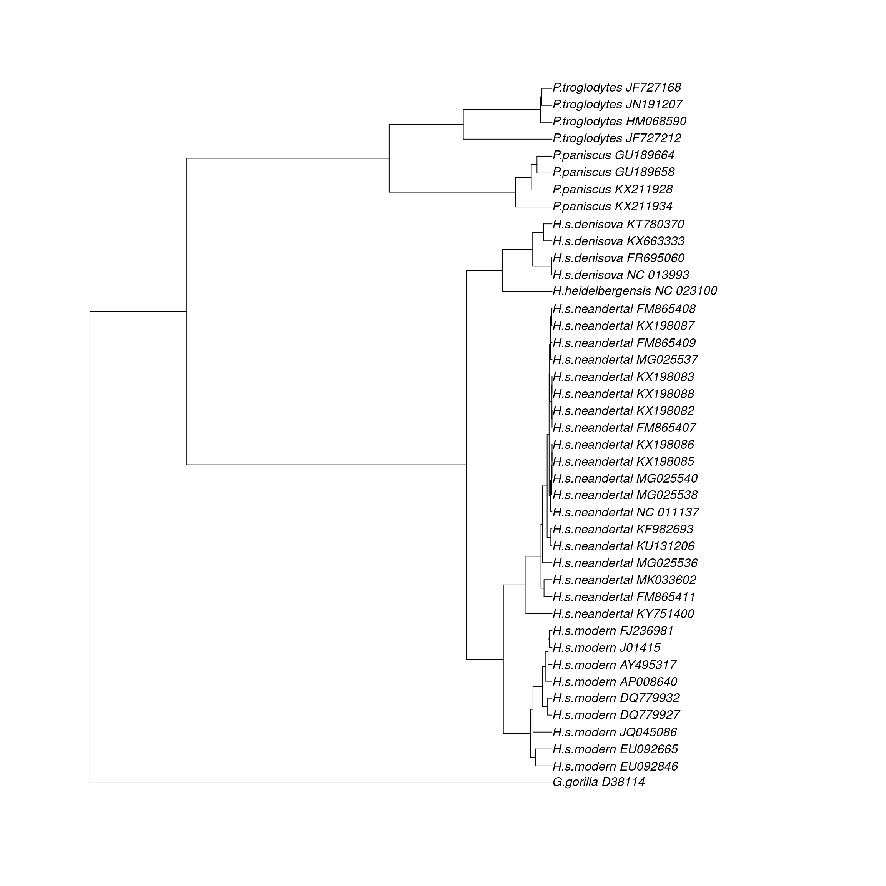
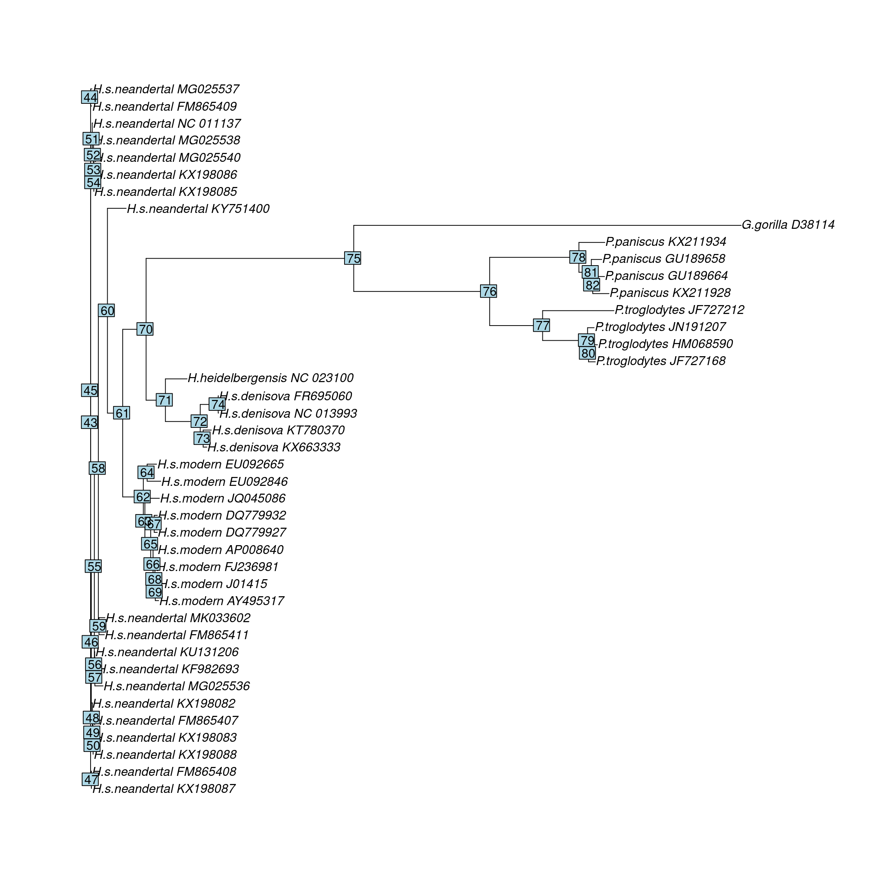
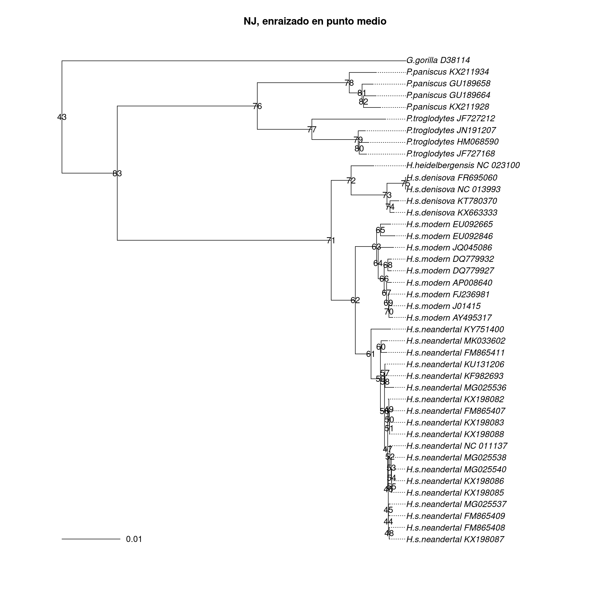

library(phangorn)Cargando paquete requerido: apemtdna <- read.phyDat('../../data/mtDNA.fasta', format = 'fasta')library(phangorn)Cargando paquete requerido: apemtdna <- read.phyDat('../../data/mtDNA.fasta', format = 'fasta')length(mtdna)[1] 42ncol(as.matrix(mtdna))[1] 1names(mtdna) [1] "G.gorilla_D38114" "P.troglodytes_JF727212"
[3] "P.troglodytes_JN191207" "P.troglodytes_JF727168"
[5] "P.troglodytes_HM068590" "P.paniscus_KX211934"
[7] "P.paniscus_KX211928" "P.paniscus_GU189658"
[9] "P.paniscus_GU189664" "H.heidelbergensis_NC_023100"
[11] "H.s.denisova_NC_013993" "H.s.denisova_FR695060"
[13] "H.s.denisova_KX663333" "H.s.denisova_KT780370"
[15] "H.s.neandertal_KX198085" "H.s.neandertal_KX198086"
[17] "H.s.neandertal_MG025538" "H.s.neandertal_NC_011137"
[19] "H.s.neandertal_FM865409" "H.s.neandertal_FM865407"
[21] "H.s.neandertal_KX198088" "H.s.neandertal_KX198083"
[23] "H.s.neandertal_MG025540" "H.s.neandertal_MG025536"
[25] "H.s.neandertal_MG025537" "H.s.neandertal_KX198087"
[27] "H.s.neandertal_KX198082" "H.s.neandertal_FM865408"
[29] "H.s.neandertal_KU131206" "H.s.neandertal_KF982693"
[31] "H.s.neandertal_FM865411" "H.s.neandertal_KY751400"
[33] "H.s.neandertal_MK033602" "H.s.modern_EU092846"
[35] "H.s.modern_EU092665" "H.s.modern_JQ045086"
[37] "H.s.modern_DQ779927" "H.s.modern_DQ779932"
[39] "H.s.modern_AP008640" "H.s.modern_AY495317"
[41] "H.s.modern_J01415" "H.s.modern_FJ236981" distancias <- dist.ml(mtdna, model = 'F81')
mt_nj <- NJ(distancias)
mt_upgma <- upgma(distancias)Ejercicio 2:
class(mt_nj)[1] "phylo"class(mt_upgma)[1] "phylo"str(mt_nj)List of 4
$ edge : int [1:81, 1:2] 44 44 54 54 53 53 52 52 51 51 ...
$ edge.length: num [1:81] 1.97e-04 2.26e-04 -4.37e-08 4.37e-08 8.51e-08 ...
$ tip.label : chr [1:42] "G.gorilla_D38114" "P.troglodytes_JF727212" "P.troglodytes_JN191207" "P.troglodytes_JF727168" ...
$ Nnode : int 40
- attr(*, "class")= chr "phylo"
- attr(*, "order")= chr "postorder"plot(mt_nj)
plot(mt_upgma)
add.scale.bar(): añade una barra de escala al árbol filogenético, que indica la longitud de las ramas en términos de distancia evolutiva
axisPhylo(): añade un eje numérico al gráfico del árbol, permitiendo interpretar cuantitativamente las distancias evolutivas entre las secuencias.
is.rooted(mt_nj)[1] FALSEmt_nj_rooted <- root(mt_nj, node = 75)plot(mt_nj)
nodelabels()
mt_nj_rooted <- root(mt_nj, outgroup = 'G.gorilla_D38114')mt_nj_rooted <- midpoint(mt_nj)plot(mt_nj_rooted, align.tip.label = TRUE, main = 'NJ, enraizado en punto medio')
nodelabels(frame = 'none')
add.scale.bar()